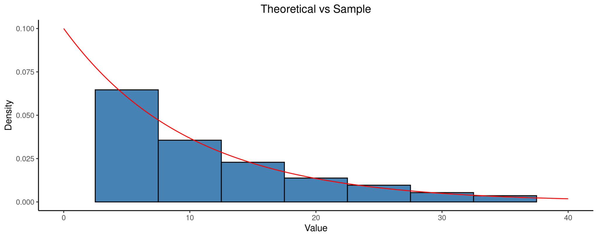
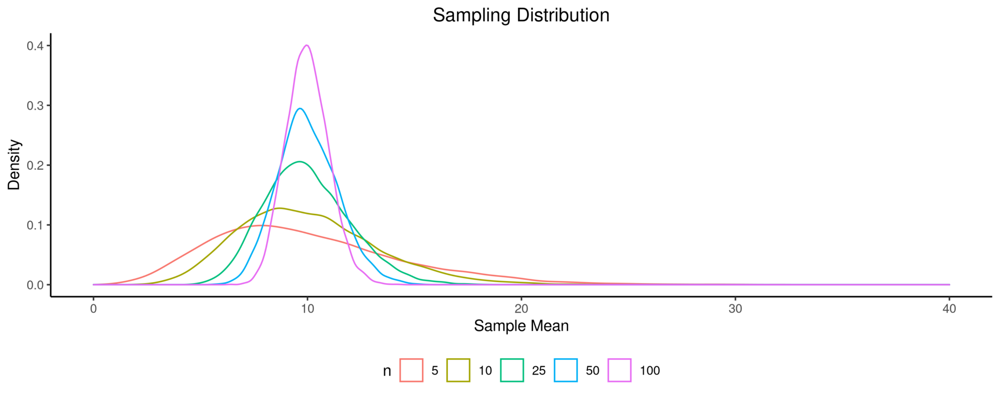

Anyone who has taken an introductory statistics course probably learned about the Central Limit Theorem (CLT). During my time as a Teaching Assistant at George Mason University, I noticed that students don’t quite understand what CLT is or why CLT is important. Hopefully, this post can serve as another reference for those who are struggling to understand this core statistical concept.
The biggest and most common mistake I saw students make is misunderstanding that CLT is some magic theory that makes every distribution a Normal distribution given a large enough sample size. I want to get this out of the way as early as possible: No, the CLT doesn’t turn any distribution into a Normal distribution simply because the sample size is large. This misunderstanding isn’t limited to statistics students. I’ve seen websites and “professionals” make this exact mistake. Below is the first paragraph on Investopedia regarding CLT:
In the study of probability theory, the central limit theorem (CLT) states that the distribution of sample approximates a Normal distribution (also known as a "bell curve") as the sample size becomes larger, assuming that all samples are identical in size, and regardless of the population distribution shape.
Investopedia: What Is the Central Limit Theorem(CLT)? (Accessed on 2021-05-15)
Granted, the distribution of sample link sends you to the sampling distribution page. For those unfamiliar, a sampling distribution is a distribution of a statistic. I'll go into detail about this concept later in the post. Had Investopedia used the term "sampling distribution" or "distribution of sample means", I wouldn't have picked on them. However, "distribution of sample" is confusing and readers can erroneously conclude that the dsitribution of the sample itself approaches a noraml distribution.
Sampling distribution is one of those concepts in statistics that confuses a lot of people. In a nutshell, a sampling distribution is the distribution of a statisic calculated from a sample. For example, the distribution of the sample mean is a sampling distribution. Notice that this is different from the distribution of the sample itself. Using some R code, I'm going to generate a random sample from a Gamma distribution with shape 1 and scale 10. I chose this distribution because it is very skewed, which makes it easy to see the difference.
library(tidyverse)
set.seed(20210517)
# Plot theoretical distribution and compare to distribution of sample for n=100
dat_comp <- tibble(x=seq(0,40, by=0.01)) %>%
mutate(theoretical = dgamma(x, shape=1, scale=10), sample = rgamma(n(), shape=1, scale=10))
ggplot(dat_comp, aes(x=sample)) +
geom_histogram(aes(y=..density..), color="black", fill="steelblue", binwidth=5) + #use density instead of count
geom_line(aes(x=x, y=theoretical), color="red") +
theme_classic() +
labs(title="Theoretical vs Sample", x="Value", y="Density") +
theme(plot.title=element_text(hjust=0.5)) +
xlim(0, 40)
The red line is the theoretical gamma density with shape 1 and scale 10 and the histogram shows the distribution of the sample generated from the theoretical distribution. As you can see, the two are similar in shape. This should make intuitive sense. The CLT states that when certain conditions are met, the sampling distribution approaches a Normal distribution. For sample means, the data (or sample) must meet the following criteria for the CLT to hold.
The CLT for sample proportions is similar, but the second condition changes to requiring at least 10 successes and 10 failures. Let’s see how the shape of the sampling distribution changes as we increase the sample size from 5 to 100. We’re using the same Gamma distribution from before and we generate 10,000 random samples for each sample size and calculate their sample means. The plot below show the distribution of the sample means.
# Sampling distribution for different sample sizes
N <- c(5, 10, 25, 50, 100)
numsim <- 10000 # number of simulations for generating sampling distribution
# Initialize output matrix
output <- matrix(data=NA, nr=numsim, nc=length(N))
col_names <- c("5", "10", "25", "50", "100")
colnames(output) <- col_names
# Generate random gamma random variables with shape=1, scale=10
for (i in 1:numsim){
for (j in 1:length(N)){
n <- N[j]
output[i, j] <- mean(rgamma(n, shape=1, scale=10))
}
}
# Organize results for easy plotting
dat_sampling <- as_tibble(output) %>%
pivot_longer(cols=col_names, names_to="n") %>%
mutate(n=factor(n))
dat_sampling$n <- factor(dat_sampling$n, levels=col_names) #reorder levels to be increasing
# Plot sampling distribution
ggplot(dat_sampling, aes(x=value, color=n)) +
geom_density() +
theme_classic() +
theme(legend.position="bottom", plot.title=element_text(hjust=0.5)) +
labs(title="Sampling Distribution", x="Sample Mean", y="Density") +
xlim(0, 40)
It’s not difficult to notice that the shape of the sampling distribution is becoming more and more bell-shaped as the sample size increases. Even though the original Gamma distribution is severely skewed, the sampling distribution of the sample mean is close to a Normal distribution when the sample size is 25. However, there is nothing magical about 25. If the original distribution is close to Normal, you can get away with a smaller sample. On the other hand, if you have an extremely skewed distribution like this example, even a sample size of 25 may not be sufficient to claim that the sampling distribution is approximately Normal. Furthermore, you can also see that the mean of the sampling distribution is approaching 10 as sample size increases. In fact, 10 is the theoretical mean of a Gamma distribution with shape 1 and scale 10.
The true power of CLT comes from our ability to make statistical inference on the parameter from the single sample we have. Consider the following scenario. You’re a statistician tasked to calculate the approval rating for the current U.S. president. The most obvious way of calculating the approval rating is to ask everyone and see how many people approve of the president out of the total number of people you asked. I hope I don’t have to convince you that this approach is absurd. It would take months or even years to ask everyone, people might change their minds while you’re still collecting data, and it would cost you a fortune to conduct this survey. A much more reasonable approach is to get a representative sample of the U.S. population (though this is much easier said than done) and try to infer what the rest of the country is thinking based on the approval rating from the sample. This is what statisticians call statistical inference.
If the sample you collected meets all the criteria for the CLT to hold, then you know that the sampling distribution is approximately Normal. Because the Normal distribution is well-understood, statisticians can create confidence intervals and perform hypothesis tests about the population parameter (the population approval rating of the U.S. president, in this case). This works even though they don’t know what the true value of the population parameter is and only have a single sample instead of the 10,000 samples I generated in my previous example.